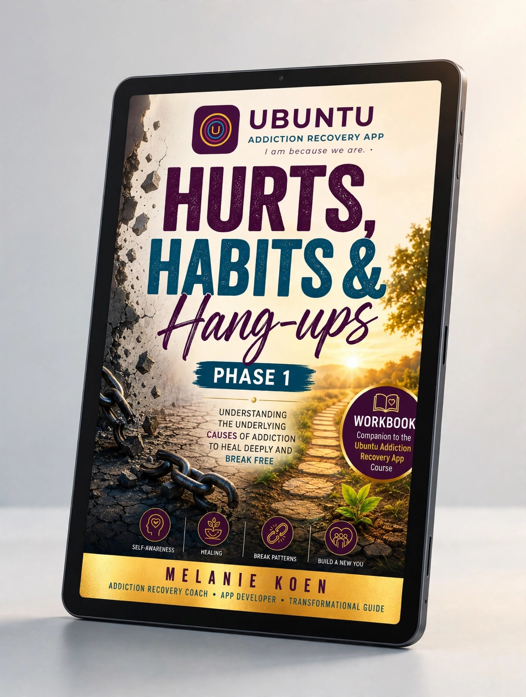

Practical tools, workbooks, and educational resources designed to support your journey toward a healthier, more purposeful life.
The Ubuntu Recovery App provides daily check-ins, anchoring exercises, and practical assessments to support your journey every single day.
Currently in Closed TestingWritten with compassion by Melanie Koen, our resources meet you exactly where you are, from the critical first 24 hours after a slip to lifelong restoration.
The First 24 Hours Recovery System. A compassionate, practical guide for the critical hours after a slip.
View in Bookshop
The 90-Day Restoration Journey. Explore patterns, set boundaries, and build a foundation for lasting recovery.
View in Bookshop